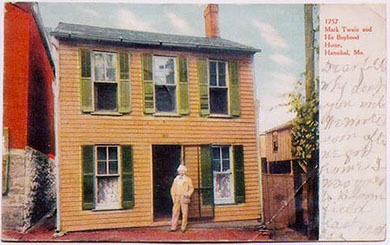
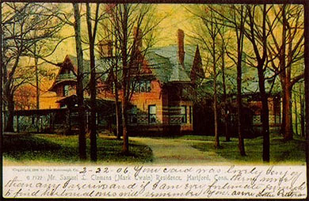

|
"A good house" can mean "a lot of people in the audience." That kind of "good house" certainly meant a lot to "Mark Twain," who spent much of his career performing in front of live audiences. For Sam Clemens, the phrase's literal meaning was also extremely important. He grew up in the little house at the left, below (the postcard here shows a photo taken on his 1902 return to Hannibal). After the success of Mark Twain's first books, Clemens moved his family to Hartford's exclusive Nook Farm neighborhood into the big house on the right (as shown in another postcard). |
|  |  |
|
MT's Tom Canty, the pauper in The Prince and the Pauper, lives in a hovel in Offal Court, dreaming about "the life of a petted prince in regal palace." |
|
Click to see full page. |
Fans of MT's Tom Sawyer like to remember him running away from home, or sneaking out of Aunt Polly's house for an adventure with Huck. But when Becky Thatcher asks Tom to draw her a picture, he produces the tribute to American middle class aspirations at left. The evidence suggests the real "artist" was not Treat Williams, who drew the other illustrations in Tom Sawyer, but MT himself. Despite the comic flavor of Tom's drawing, there's no question that Sam Clemens shared Tom's belief that a big house could make a man feel big too. At the very moment he was writing Tom Sawyer, he was mortgaging his future as a literary performer to the expense of constructing and maintaining that mansion in Hartford. One good house was going to depend upon the other. |